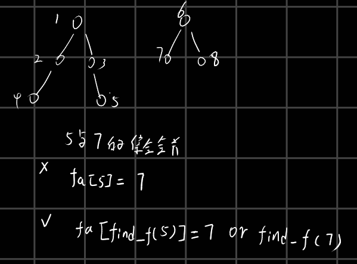

题意
给定一个图，节点数量2<=n<=8，边数量n - 1 <= m <= n(n - 1) / 2，求一颗树，树上的边权值对k取模后只最小。
题解
这题是枚举树来做的，最开始的思路是对于每条边枚举接下来到达的点（就是枚举一个集合，集合重元素为即将达到的点），然后dfs逐个对其他点进行访问，但是这是错的，假设第一次集合中位AB两点，然后先访问A，再访问B，这样结果是不对的，因为A访问完其访问组成没有进行记录。
正解是这样的，通过枚举边来进行枚举树，使用并查集，但是并查集不进行路径压缩，当加边的时候，首先检查边中两个点是否在一个集合里，如果不在一个集合里则合并两个集合，被修改fa的一方需要记录一下以前的值，为了后续dfs之后的恢复，然后进行操作即可。注意一点，就是并查集在做集合合并的时候一定是集合根节点的fa进行改变，如果不是集合根节点进行改变，那么这样的修改只是将部分集合中的元素转移到了其他集合中。

集合合并
1
2
3
4
5
6
7
8
9
10
11
12
13
14
15
16
17
18
19
20
21
22
23
24
25
26
27
28
29
30
31
32
33
34
35
36
37
38
39
40
41
42
43
44
45
46
47
48
49
50
51
52
53
54
55
56
57
58
59
60
61
62
|
#include <bits/stdc++.h>
using namespace std;
#define ll long long
#define DEBUG0
const int mod1 = 1e9 + 7;
const int mod2 = 998244353;
int fa[9];
struct Edge{
int u,v;
ll w;
}e[50];
ll ans,k,n,m;
int find_f(int posi){
if(fa[posi] != posi)return find_f(fa[posi]);
return posi;
}
void dfs(int i,int cnt,ll sum){
if(cnt == n - 1){
ans = min(ans,sum);
return;
}
for(;i < m;i++){
if(find_f(e[i].u) == find_f(e[i].v))continue;
int t = find_f(e[i].u);
fa[t] = find_f(e[i].v);
dfs(i + 1, cnt + 1, (sum + e[i].w) % k);
fa[t] = t;
}
}
int main()
{
cin>>n>>m>>k;
for(int i = 0 ;i < n;i++){
fa[i] = i;
}
for(int i = 0;i < m;i++){
scanf("%d%d%lld",&e[i].u,&e[i].v,&e[i].w);
e[i].u--;
e[i].v--;
e[i].w = e[i].w % k;
}
ans = k;
dfs(0,0,0);
cout<<ans<<endl;
}
|